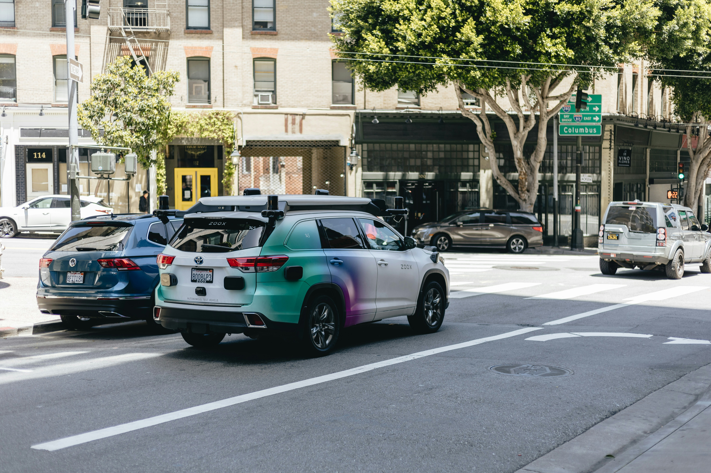

About the workshop
Recently, embodied intelligence has achieved transformative breakthroughs, driven by advances in artificial intelligence algorithms and multimodal foundation models. These models, trained on vast cross-modal datasets (vision, language, 3D geometry), empower autonomous robots and systems with grounded multimodal understanding – enabling contextual environmental reasoning, autonomous decision-making under uncertainty, and execution of multi-stage tasks through dynamic action chaining. Such capabilities significantly enhance robotic generalization across unseen scenarios, accelerating the evolution from task-specific automation to adaptive embodied agents capable of zero-shot capability. As we look to the future, enabling robots to operate reliably in open-world environments remains a significant challenge. In such challenging environments, each robot is expected to learn/adapt their surrounding environment via intelligent sensors (such as optical, vision or acoustic sensors) while maintain world models updated through active exploration. Here, hybridizing foundation models’ semantic reasoning (LLMs, VLMs) with classical planning show promise in comprehensively perception of the physical world.
Speakers
Program
The workshop will feature prominent speakers, and contributions from the intelligent vehicles and mobile robotics community. The workshop is happening in-person in Hangzhou, CHN. Additionally we welcome participants to listen and contribute virtually via zoom.
| Time (CET) | Talk Title | Speaker |
|---|---|---|
| 07:50-08:00 | Welcome & Opening Remarks | Johannes Betz |
| 08:00-08:30 | Data Driven Planning Methods for Intelligent Vehicles: Potential, Challenges, and Applications | Yeqiang Qian |
| 08:30-09:00 | Autonomous Stunt Driving and its Applications in Evasive Hazard Avoidance | Aliasghar Arab |
| 09:00-09:30 | Towards Full Autonomy: Fusing MPC and DRL for Adaptive, Stochastic, and Robust Nonlinear Control Algorithms | Baha Zarrouki |
| 09:30-10:00 | Spotlight Session for Posters - 2min each | Submitted Papers and Posters |
| 10:00-10:30 | Coffee Break & Poster Session | |
| 10:30-11:00 | Learning Planning and Control for Extreme Vehicle Mobility | Xuesu Xiao |
| 11:00-11:30 | SLAM in Real Robotic Setups: Addressing Dynamic Content and Leveraging Scene Structure and Architectural Plans | Javier Civera |
| 11:30-12:00 | Delivering the first Human vs Machine experiment on a F1 Track - Retrospective and Forward Vision | Giovanni Pau |
| 12:00-12:05 | End of Workshop: Goodbye & Closing Remarks | Johannes Betz |
| 12:05-12:20 | IROS 2025 Opening Ceremony |
Call for Papers
This workshop is intended to identify the challenges associated with the software development of autonomous vehicles and to foster discussion about how current research can address them. We invited papers for submission to the workshop related to the topics of ITS, autonomous vehicles, robotics, embodied AI, motion planning, perception and modeling.
Organizers
Assistant Professor
Department of Mobility Systems Engineering
Technical University of Munich
"Autonomous Ground Vehicles and Intelligent Transportation Systems"